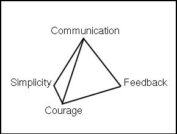

about Extreme Programming
with Perl
| Previous: Chapter 1: The Problem | Next: Chapter 3: Perl | |
Extreme Programming (XP) is an agile software-development methodology. XP helps you remain light on your feet by avoiding unnecessary baggage and by incorporating feedback continuously. Changing requirements are an expected and acceptable risk, because the customer sees the system being developed in real-time. Mistakes are immediately visible and are corrected while the feature's implementation is fresh and pliable, much like a potter reworks clay. Programmers work and rework the code in XP projects. The customer sees a system grow from layer upon layer of detail. The software is only as effective as the details it embodies. A tax accounting system must round computations correctly, or it can't be used; it's insufficient to get the formula right without considering that taxes are collected in whole currency units. Details matter, and XP programmers reflect back to the customer in the only way that matters: working code. All this working and reworking requires a stable base and good tools. To throw pots effectively, you need to be seated comfortably at your potter's wheel, and your tools need to be within easy reach. In the world of idea creation, people need comfort, too. They need to know what's expected of them and why. An XP team is expected to follow 12 simple practices. You aren't supposed to execute the practices blindly, however. XP gives us a framework of four core values that lets us adjust the practices to suit our particular project. The four core values are like a comfortable mental chair; we work our code using the practices with the core values supporting our every movement. This chapter explains XP's core values: communication, simplicity, feedback, and courage. We then enumerate XP's 12 practices, and discuss how to adopt them. Core ValuesXP is built on four core values: communication, simplicity, feedback, and courage. The values reinforce each other to form a stable structure as shown in the figure: 
The four values give the people in XP projects a firm foundation to stand on, the why for the how. Unlike plan-driven software methodologies mentioned in The Problem, XP is people-driven. We value people over process. The idea of giving people reasons (core values) for what they do (practices) is not new. For example, before XP was a twinkle in Kent Beck's eye, John Young, then CEO of Hewlett-Packard, stated, "We distinguish between core values and practices; the core values don't change, but the practices might."[1] It's important to trust people to judge the validity of a practice for their particular job. They need a value system to frame their judgments so that a person can change a practice without undermining the goals of an organization. The values relate to each other to form a framework. Without these relationships, the values would not hold together, and people would be less likely to accept and to work with them. The tetrahedron symbolizes the importance of the bonds between the values. As you read through the descriptions in the following sections, you'll see how the values support each other and the practices. Communication
Software is developed as quickly as the communication links in the project allow. The customer communicates her requirements to programmers. The programmers communicate their interpretation of the requirements to the computer. The computer communicates with its users. The users communicate their satisfaction with the software to the customer. Communication in XP is bidirectional and is based on a system of small feedback loops. The customer asks the users what they want. The programmers explain technical difficulties and ask questions about the requirements. The computer notifies the programmers of program errors and test results. In an XP project, the communication rules are simple: all channels are open at all times. The customer is free to talk to the programmers. Programmers talk to the customer and users. Unfettered communication mitigates project risk by reducing false expectations. All stakeholders know what they can expect from the rest of the team. Simplicity
We all want simple designs and simple implementations, but simple is an abstract concept, difficult to attain in the face of complexities. XP takes simplicity to the extreme with practical guidelines:
Do the simplest thing that could possibly work (DTSTTCPW) means you implement the first idea that comes to mind. This can be scary. Rely on your courage to try out the idea. Remember that failure is an important part of creation. It is unlikely the simplest idea is what you will end up with. However, it's also unlikely you can anticipate what's wrong with your simple solution until you try it out. Let the feedback system guide your implementation. DTSTTCPW is simplicity as in fast and easy. Once and only once (OAOO) helps you maintain your agility by reducing the size of your code base. If you let conceptual redundancy permeate your system, you have to spend more and more time rooting out faults. Every time you copy-and-paste, you take one more step closer to bloatware. Each copy creates an implicit coupling, which must be communicated to the rest of the team. Be courageous, just say no to your mouse. Say yes to refactoring the code for re-use. OAOO is simplicity as in few interchangeable parts. You aren't going to need it (YAGNI) is a popular and fun expletive. If you can solve the immediate problem without introducing some feature, that's YAGNI! And, you simplified your problem by omission. YAGNI is a corollary of OAOO. If you don't have to implement the feature in the first place, your system just took a step away from bloatware. YAGNI is simplicity as in basic. Sometimes you add a function for good reason but later find out the reason is no longer valid. At this point you should delete the function. It is unnecessary complexity. It shouldn't require much courage, because the code is still there in your source repository. [COMMENT: link to logistics.] You can always pull it out if you need it again. Removing dead code is simplicity as in pure and uncluttered. Feedback
The more immediate feedback, the more efficiently a system functions. A simple example can be found in the shower. Some showers respond instantly to changes in the faucet handle. Other showers don't. I'm sure you've experienced showers installed by Central Services engineers from the movie Brazil.[2] You turn on the shower, adjust the temperature, and hop into a hailstorm or The Towering Inferno.[3] After you peel yourself off the shower wall, you adjust the temperature, and wait a bit longer before timidly stepping in again. The long delay in the system makes showering unpleasant and inefficient. For many customers, this is what software development is like. You request a change, and it is delivered many months later in some big release. Often the change fails to meet your expectations, which means another change request with yet another long delay. XP is like a well-designed shower. You request a change and out comes software. Adjustments are visible immediately. The customer sees her requirements or corrections implemented within weeks. Programmers integrate their changes every few hours, and receive code reviews and test results every few minutes. Users see new versions every month or two.[4] The value of immediate, real world feedback should not be underestimated. One of the reasons for the success of the Web is the abundance of structured and immediate feedback from users. Developers see errors in real time, and contract all input and output that causes Web application failures. Users benefit from running the latest version of the software, and seemingly on demand fault corrections. When people talk about the enduring value of the Web in the distant future, I predict they will value the extreme acceleration of user feedback and software releases. The impact of this feedback on quality and development efficiency is what differentiates Web applications. XP reduces project risk by taking iterative development to the extreme. The customer's involvement does not end at the planning phase, so requirements errors are reconciled almost immediately. The system's internal quality is maintained by programmers working in pairs who are striving for simplicity. Automated testing gives everybody feedback on how well the system is meeting expectations. XP uses feedback to integrate towards a solution, rather than trying to get it through a discontinuity.[5] Courage
Fear is a prime motivator, or as Napoleon Bonaparte put it, "There are two levers for moving men: interest and fear." With courage, our relationships take on a new quality: trust. XP helps build the bonds of trust by repeatedly exposing people to small successes. Courage is required at all levels. Is this solution too simple? Is it too complex? Does this test cover all the cases which could possibly break? Will the programmers understand what I mean by the story? Will we make it to Comdex without a detailed schedule? We overcome fear, uncertainty, and doubt in XP with courage backed by the other three values. A simple system is harder to break than a complex one. Multilevel, rapid feedback lets us know quickly when our courageous changes fail. Open communication means we don't have to face our fears alone. Our team members will support us. All we have to do is speak of our fears as openly as Piglet did in the epigraph to this section. And, Rabbit finds the right words to support him[6]:
Sometimes we feel as small and ineffectual as Piglet. During these downtimes, it's likely one or more of our team members feel as courageous as Rabbit or Pooh. XP accepts that people's emotions vary, so XP uses team interactions to keep the project stable and to provide emotional support in those inevitable, difficult times. Courage is a double-edged sword. You needed to overcome your fears, but too much courage can be dangerous. XP uses small steps to promote courage and keep it in check. Team members see a continuous flow of failures and successes. XP uses small, regulated doses to discourage excess and encourage success. The PracticesXP's practices embody the values described in the previous sections. In his book Extreme Programming Explained Kent Beck defines the 12 practices as follows (quoted verbatim):
These 12 simple practices realize the four core values. The remainder of this book explains how to implement the practices in detail. Before we get into implementation, let's briefly discusses how you might adopt XP in your organization. Adopting XPOrganizations have their own way of doing things. There are practices, processes and probably even some core values. In order to adopt XP, you'll need to work within this framework, and accept the status quo. One way to start is to use XP in a project composed of volunteers. The project may even be important, which is good, because your success with XP should be visible. Once that project succeeds, pick another and let another team coalesce around it, possibly including a few members, but not all, from the original XP team. You may not be in a position to pick and choose projects, but you probably have some latitude in how you work on a daily basis. If this is the case, try selecting a few practices that align with your existing methodology. For example, if your organization values testing, try test first programming. Or, organize your day around stories. I find this technique to be helpful for non-software problems, too, as you'll see in Release Planning. Keep the stories on index cards, and work through them serially. Check off each card as you complete it. Once you see your productivity go up, discuss the practices you found successful with a co-worker or your manager. Use the core values as your guide. You'll need courage to start the communication. Keep your explanations simple, focusing on the practice, not the whole of XP. Be open to feedback, and incorporate it immediately. And, as always in XP, take small steps and iterate. As you read through this book, look at the practices from your organization's perspective. You'll see plenty of ways to integrate them. XP is an evolutionary methodology that can be adopted incrementally and organically. Even if you are the head honcho, don't install XP with a Big Bang. Organizations and people have their own natural pace of change. XP cannot accelerate this rate of change overnight. Change cannot be mandated. Rather XP values feedback and communication to allow you to measure your progress and to integrate change continuously. Footnotes
|
||
| Previous: Chapter 1: The Problem | Next: Chapter 3: Perl | |
Licensed under a Creative Commons Attribution 4.0 International License.